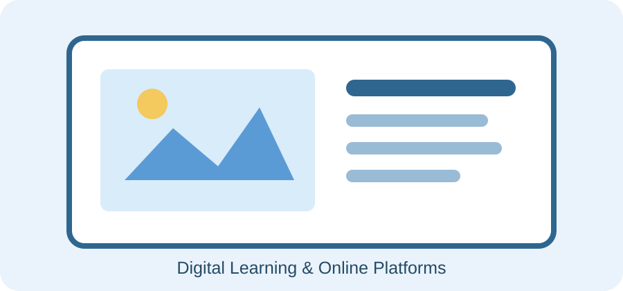

اسم الطالبة: مني اسماعيل حسين
السكشن: 153
الكود الجامعي: 2503592
المقدمة
أصبح الإنترنت جزءًا أساسيًا من العملية التعليمية؛ إذ تساعد المنصات الإلكترونية على الوصول إلى المحتوى وتنظيم المقررات والتواصل بين المعلم والطلاب. وتعرض هذه الصفحة مفهوم المنصات التعليمية وأهم استخداماتها ومميزاتها والتحديات المرتبطة بها.
ما المقصود بالمنصات التعليمية؟
هي بيئات رقمية تجمع أدوات لإدارة التعلم، مثل نشر المحاضرات والملفات، وتسليم الواجبات، وإجراء الاختبارات، ومتابعة تقدم المتعلمين.

أهم أنواع واستخدامات المنصات الإلكترونية
- منصات إدارة التعلم: تنظيم المقررات والمحاضرات والواجبات والاختبارات.
- أدوات الاجتماعات المرئية: عقد المحاضرات المباشرة ومناقشة الموضوعات عن بُعد.
- المكتبات ومحركات البحث: الوصول إلى الكتب والأبحاث والمصادر العلمية.
- أدوات التعاون السحابي: إنشاء المستندات ومشاركة الملفات والعمل الجماعي.
مميزات وتحديات التعلم الإلكتروني
| المميزات | التحديات |
|---|---|
| مرونة الوقت والمكان | الحاجة إلى اتصال جيد بالإنترنت |
| تنوع مصادر التعلم | احتمال التشتت وضعف التركيز |
| سهولة مشاركة الملفات | ضرورة حماية البيانات والحسابات |
| متابعة التقدم والأنشطة | الحاجة إلى مهارات رقمية وتنظيم الوقت |
إرشادات الاستخدام الآمن والفعال
- استخدام كلمات مرور قوية وعدم مشاركتها مع الآخرين.
- الاعتماد على المنصات والمصادر الموثوقة.
- التحقق من صحة المعلومات قبل استخدامها.
- تنظيم وقت الدراسة وإيقاف الإشعارات غير الضرورية.
- حفظ نسخة احتياطية من الملفات والواجبات المهمة.
الخاتمة
تدعم تطبيقات الإنترنت والمنصات الإلكترونية تطوير التعليم عندما تُستخدم بطريقة منظمة وآمنة، وتُدمج مع التفاعل والمشاركة الفعالة، مع مراعاة احتياجات المتعلمين وإمكاناتهم.